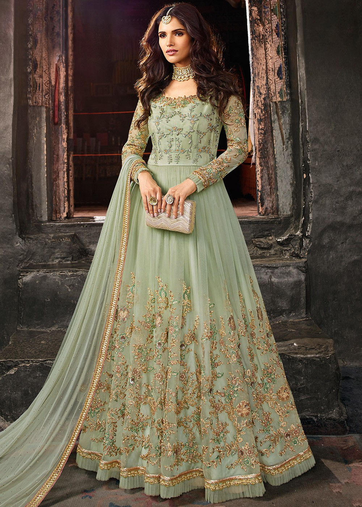
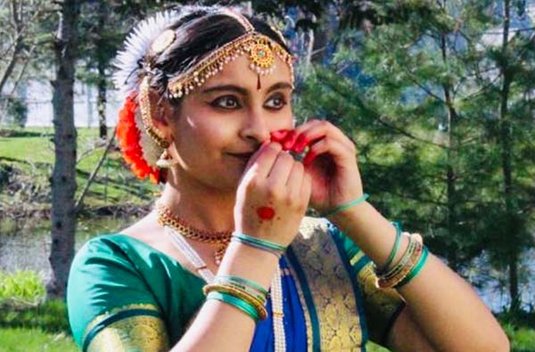
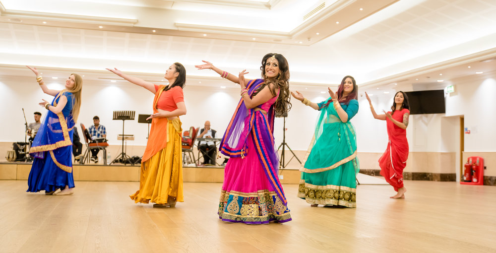

INTRODUCTION
A little sneak peak...
Indian Culture and heritage is made up of a rich and complex background. There are many different parts from the delicious food eaten, to the gorgeous clothing style. I am honored to be part of this rich heritage and love learning more about my culture! I have been raised surrounding tradition and heritage, and I feel proud to share my background to the world. Through this website I hope to teach you what I know, and educate you on this rare gem! Our world is full of diversity, and it is important to embrace and recognize all the pieces that make our world whole.
Hi! Welcome to my website! My name is Nirjara Akkole and I am 15 years old. To give you a little background on who I am: I am currently a freshman at Walpole High School, located in Massachusetts, United States. I love being part of my school's Speech and Debate Team, because I can really express who I am. I am also on the girls varsity tennis team, and run track and field in the winter. Some of my hobbies include sewing, writing, and dancing. I find the fact that I am able to connect with my culture a privilege. A privilige that I have come to respect and appreciate throughout the years.
Indian clothing is complex and rich, with many different varieties. There a multiplicity of styles and variations depending on the region. Indian clothing is one with much color and vibrance, and has a very eye-catching appeal. The fashion industry has evolved over the years, providing us with even more options and developed styles. Displayed below are three different Indian outfits that I have chosen to share.

Lehenga
This style of Indian traditional clothing is called a Lehenga. It consists of a long flowy skirt, a short top, and a scarf sort of piece. The skirt is generally full of intricate detail, and it is the statement piece of the outfit. This dress can be paired with large jewllery, and can be dressed up or down depending on the occasion. Lehengas come in multiple colors and styles, so you can pick the one that you love best!

Sari
This dress is referred to as a Sari. Saris are a drape made of rich fabric and various designs. They can be draped or styled in many different ways, dependant upon which part of India it's from. This garment is one that is very meaningful to India, as it symbolizes the intricate culture.

Salwar
This dress is known as a salwar kameez, and has many, many varations. It is generally woren with a pant, and a long top. The pant can be a flowy, flare pant, or even tight leggings. There are a variety of tops as well, all stitched uniquely with different styles and patterns. It also comes with a long piece of decorative, sheer fabric that is draped around the neck or shoulders.

Anarkali
An Anarkali dress is another beautiful piece woren by Indian women. It is a long one piece dress, similar to a gown. The top often has intricate patterns of beading, delicatley handmade. The bottom portion is generally flowy, and covers the feet. Additionally, comes with a long piece of decorative, sheer fabric that is draped around the neck or shoulders.
FOOD
Here are some of my favorite Indian food items.
Click on the images to make them bigger
Classical Dance

A little intro! Indian dance and music is very unique and diverse. There are multiple types of dances from all over India. There are 8 major classical dances. Classical Dances have unique history and are the cultural gems of India. I do a classical dance style named Bharatnatyam. It is filled with intricate steps and rythms, along with beautiful hand gestures.
There are many different styles within this dance form as well. From fast paced dances that use technical steps and rythms, to soft dances with heartfelt emotion, there is quite variety. I have learnt this style from a very young age, and I am at a quite advanced level. Recently, I recieved a Diploma in this art form, after learning it for 8 years.
Bollywood Dance

A brief description! Another type of Indian dance is Bollywood dance. Bollywood dance is a contemporary type, and has more creative freedom. It is constantly developing, and is a modern, "hip" type of dance. It is based on up and coming Bollywood music, and can be choreographed in a variety of different ways.
There is more fluidity, and has the fusion that a classical dance style lacks. Although classical dances are the gems of India, Bollywood dance will certainly entertain you. Both classical and Bollywood dance are unique in their own way!